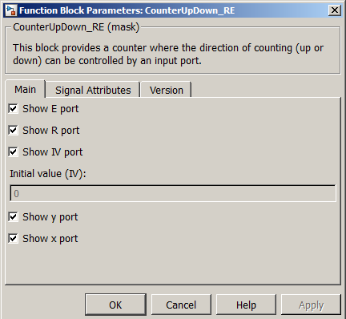
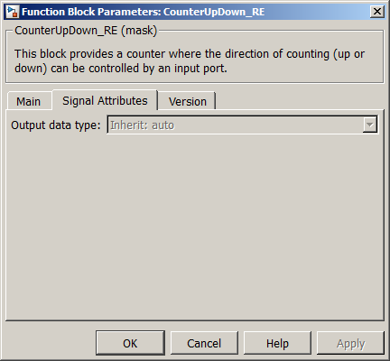

| MBDS Environment |
|
CounterUpDown_RE |
MATLAB Helpdesk |
General
A block for counting up and down.
Library
DescriptionMBDS Blockset
This block provides a counter where the direction of counting (up or down) can be controlled by an input port.
Using the parameter mask the block can be configured according to the users needs. Via register card Main the block input and output ports can be shown or hidden (see Figure 1).
- Show E port. If checked, the block provides an enable input port. If unchecked, the block cannot be disabled.
- Show R port. If checked, the block provides a reset input port. If unchecked, the block cannot be reset.
- Show IV port. If checked, the block provides an input port for the initial value used when reset the block. If unchecked, the initial value can be configured via a mask parameter.
- Initial value (IV). Here the initial value can be specified if the IV port is hidden.
- Show y port. If checked, the block provides the block state output port.
- Show x port. If checked, the block provides an output port for the internal countdownup value.

Figure 1: Parameter Mask Dialog - Register card MainVia the register card Signal Attributes signal related attributes can be configured (see Figure 2).

- Output data type. If the initial value is specified by a mask parameter, e.g. the IV port is hidden, the related data type can be configured here.
Figure 2: Parameter Mask Dialog - Register card Signal AttributesThe register card Version displays the block version information.
Inputs and Outputs
Example
Port I/O Data Type Description E
In
boolean Supresses the block calculation while false R In boolean Resets the block state to its initial value while true IV In Any integer Initial value adopted when the block is reset DIR In boolean Counter direction, if true the counter is incremented y Out boolean Counter state, true if greater than zero x Out Any integer Internal counter value
Refer to the example.